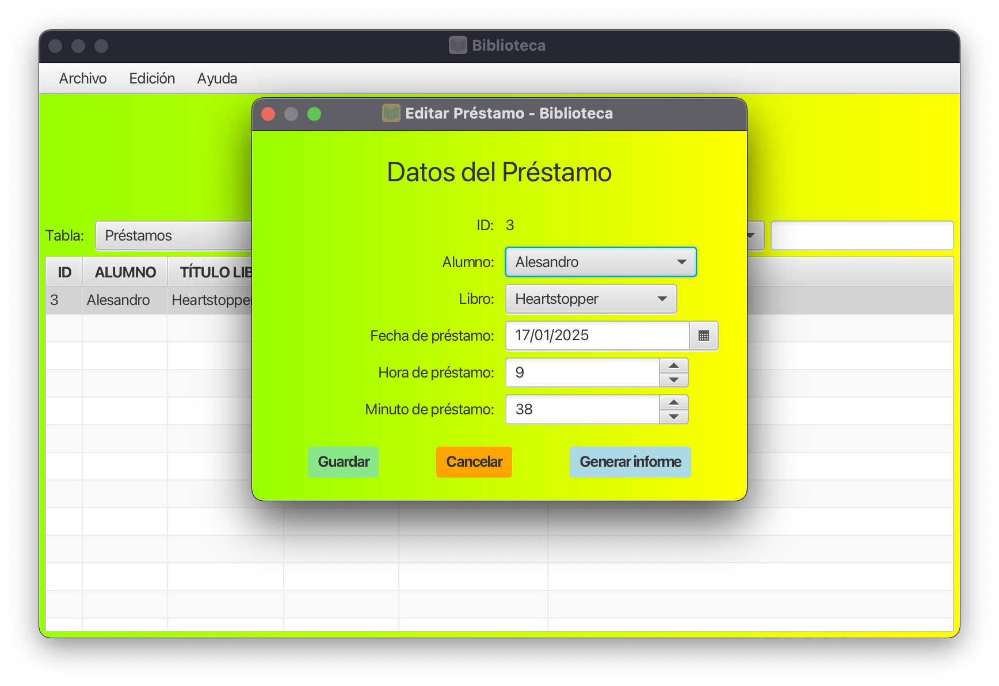

GESTIÓN DE PRÉSTAMOS
CÓMO USAR LA INTERFAZ
- Seleccionar Estudiante: Haga clic en el menú desplegable "Estudiante" y elija al estudiante que solicita el préstamo.
- Elegir Libro: Utilice el menú desplegable "Libro" para seleccionar el libro que se va a prestar.
- Establecer Fecha: Haga clic en el selector de fecha para elegir la fecha del préstamo. Aparecerá un calendario para facilitar la selección.
- Configurar Hora: Use los controles de hora y minuto para especificar el momento exacto del préstamo.
- Guardar el Préstamo: Una vez que haya completado todos los campos, haga clic en el botón "Guardar" para registrar el préstamo.
- Cancelar la Operación: Si desea descartar los cambios, haga clic en el botón "Cancelar".
- Generar Informe: Después de guardar el préstamo, es posible que se habilite el botón "Informe". Haga clic en él para generar un informe detallado del préstamo.
CONSEJOS ADICIONALES
- El campo ID se llenará automáticamente y no puede ser modificado.
- Asegúrese de que todos los campos obligatorios estén completos antes de intentar guardar el préstamo.
- El selector de fecha tiene un tooltip que proporciona información adicional sobre el formato de fecha esperado.
- Los botones tienen estilos visuales distintos para ayudar a identificar su función: verde para guardar, rojo para cancelar y azul para generar el informe.
